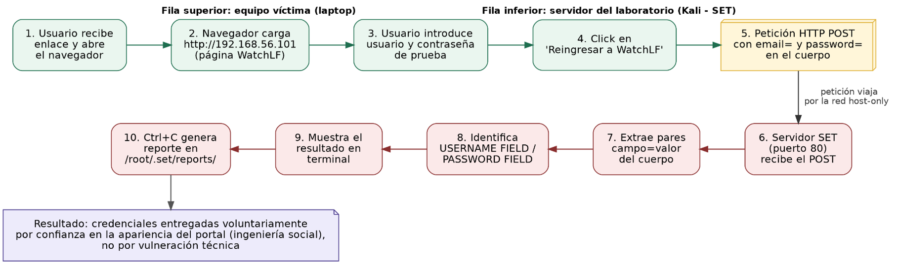
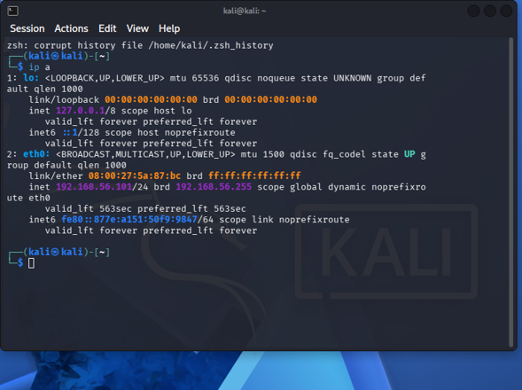
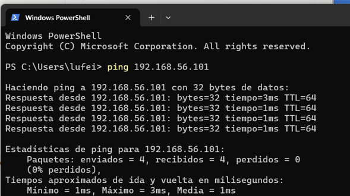
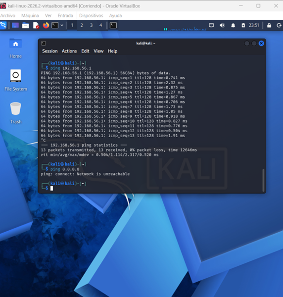
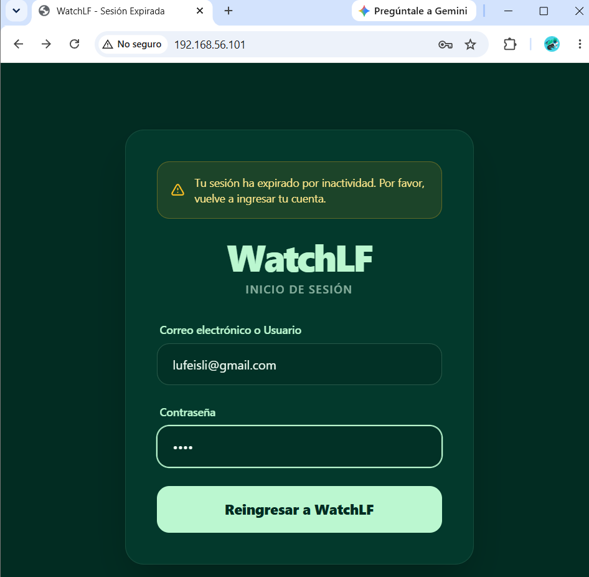
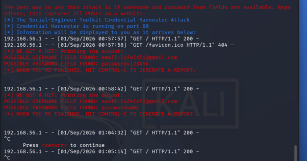
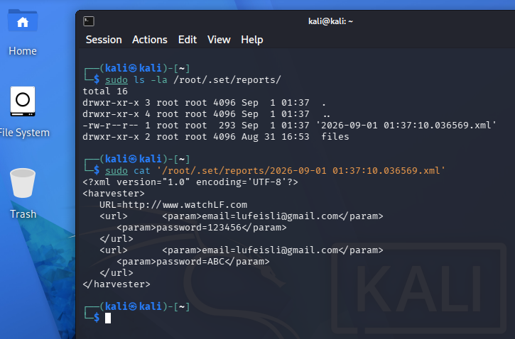

Conceptos principales
Credential Harvester
Módulo de SET que levanta un servidor web temporal, sirve una página con formulario y captura cualquier dato enviado mediante POST, registrándolo en un reporte local.
Red Host-Only
Adaptador de VirtualBox que aísla la comunicación entre el equipo host y la VM de Kali, sin ruta hacia Internet ni hacia la red física, cumpliendo la restricción de no exponer el servidor.
Indicadores de phishing
Señales verificables como dominio no oficial, ausencia de HTTPS, mensajes de urgencia y lógica de autenticación expuesta en el cliente.
Ingeniería social vs. vulneración
La credencial no se obtiene rompiendo cifrado ni explotando software, sino por la confianza del usuario en la apariencia legítima del portal.
Configuración del entorno
Red host-only entre el equipo host (víctima) y la VM de Kali (servidor del ataque simulado), y flujo de configuración de SET con Custom Import:
# Verificar la interfaz host-only en Kali
ip a
# Asignar IP estática dentro del segmento host-only
sudo ip addr add 192.168.56.101/24 dev eth1
# Verificar aislamiento (no debe responder)
ping -c 3 8.8.8.8
# Iniciar Social-Engineer Toolkit
sudo setoolkit
# Flujo dentro de SET:
# 1) Social-Engineering Attacks
# 2) Website Attack Vectors
# 3) Credential Harvester Attack Method
# 4) Custom Import -> ruta de la carpeta con index.html
# 5) IP de POST back -> IP host-only de Kali (192.168.56.101)
# Al finalizar, generar el reporte
# Ctrl + C dentro de SET
ls -la /root/.set/reports/Flujo de captura de información
El siguiente diagrama resume el recorrido técnico completo, desde que la víctima abre la página hasta que SET registra el reporte final:

Vista previa de la página ficticia (no funcional)
Advertencia ética: la siguiente réplica se muestra únicamente con fines de documentación académica. El formulario está deshabilitado a propósito: no envía, procesa ni almacena ningún dato, y no se conecta a ningún servidor. Esta actividad se realizó en un entorno de laboratorio aislado (red host-only) siguiendo restricciones estrictas de uso ético. Reproducir esta técnica fuera de un entorno controlado, contra personas o sistemas reales, constituye una actividad ilegal y no autorizada. Este contenido no debe ser replicado con fines maliciosos.
WatchLF
Inicio de sesión
Réplica visual no funcional de la página utilizada en el laboratorio — los campos están deshabilitados y el botón no realiza ninguna acción real.
Ejecución y Evidencias
El servidor de Credential Harvester se levantó en el puerto 80 sobre la IP host-only de Kali. Desde el navegador del equipo host se accedió a la página ficticia de WatchLF y se envió un formulario con datos de prueba, los cuales fueron capturados en tiempo real por SET.

Fig 1: Saber ip de Kali

Fig 2: Hacer ping a la IP de Kali

Fig 3: Configuración de red host-only validada desde Kali

Fig 4: Página ficticia de WatchLF

Fig 5: Captura en terminal de Kali

Fig 6: Reporte generado en /root/.set/reports/
Indicadores de phishing identificados
- URL / dominio no oficial: el portal no pertenece al dominio real del servicio.
- Ausencia de HTTPS válido: el sitio corre sobre HTTP plano, sin certificado emitido por una autoridad reconocida.
- Mensaje de urgencia: el aviso de "sesión expirada" busca una reacción rápida del usuario.
- Lógica de autenticación expuesta en el cliente: visible en el código fuente del navegador.
- Destino de envío no verificado: el formulario reenvía los datos a una IP interna, no a un servidor institucional conocido.
Controles de seguridad propuestos
- Verificación del certificado TLS/SSL antes de introducir credenciales.
- Autenticación multifactor (MFA) como segunda barrera ante credenciales comprometidas.
- Capacitación continua en concientización de phishing.
- Filtrado de correo y bloqueo de dominios maliciosos (SPF/DKIM/DMARC).
- Monitoreo y proceso definido de respuesta ante incidentes.
Aprendizajes obtenidos
- Comprendí cómo un adaptador host-only aísla completamente la comunicación entre el host y una VM, cumpliendo restricciones de laboratorio sin exponer el entorno a Internet.
- Aprendí el flujo técnico completo de un Credential Harvester: desde la petición POST del formulario hasta el registro del reporte en SET.
- Reforcé la diferencia entre ingeniería social y vulneración técnica: la contraseña fue entregada voluntariamente por confianza en la apariencia del portal.
Conclusión
Esta actividad permitió comprender, de forma directa y controlada, por qué la ingeniería social continúa siendo una de las técnicas de ataque más efectivas dentro de la ciberseguridad, incluso cuando existen controles técnicos robustos. El proceso de captura no depende de vulnerar ningún sistema criptográfico, sino de aprovechar la confianza del usuario en la apariencia visual de un sitio. La concientización constante del usuario final, junto con controles como la autenticación multifactor, sigue siendo la línea de defensa más determinante frente al phishing.